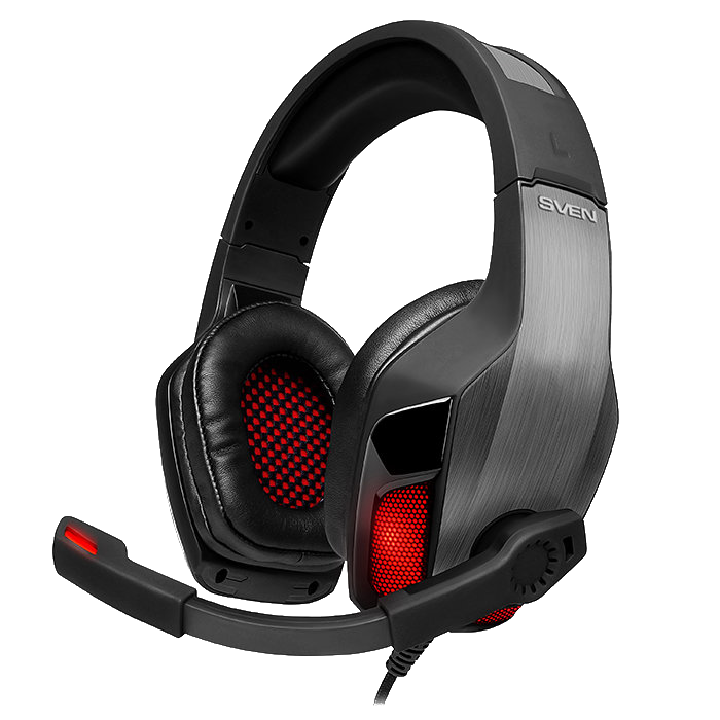
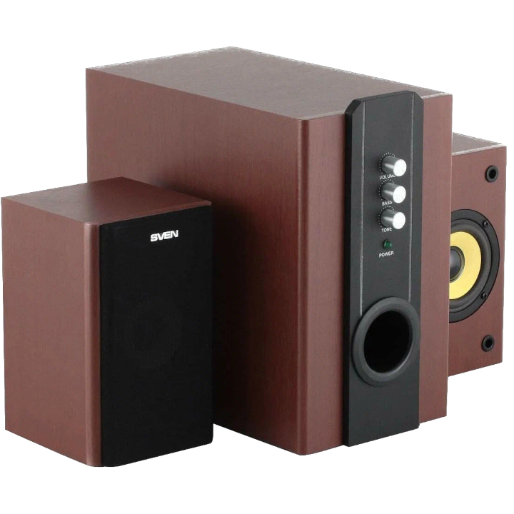
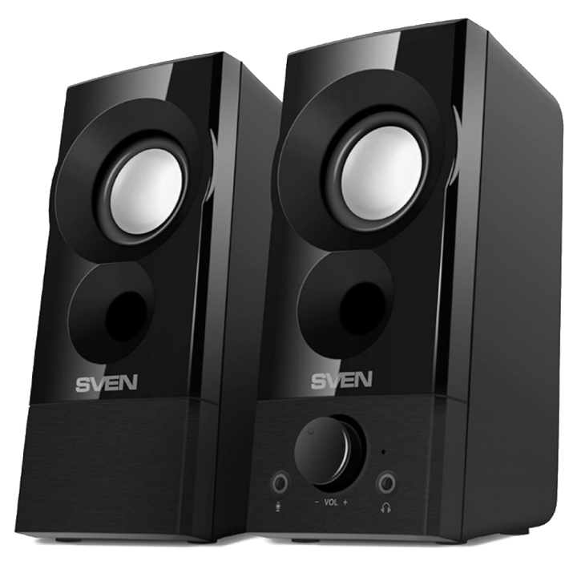
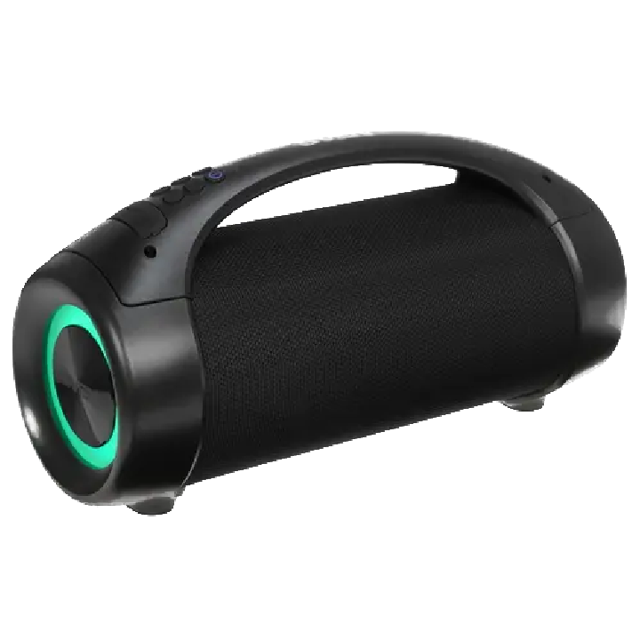

О нас
Торговая марка SVEN появилась в 1991 году как ТМ компьютерной периферии, предложив потребителям качественные и доступные по цене сетевые фильтры, блоки бесперебойного питания и компьютерную мебель.


Постепенно развиваясь, к началу 2000-х ассортимент продукции SVEN дополнился мультимедийными акустическими системами, наушниками, компьютерными аксессуарами. Особую любовь потребителей SVEN завоевал, выведя на рынок линейки мультимедийных акустических систем 2.0, 2.1, 5.1.
Многоканальные акустические системы SVEN с близким к стандартам Hi-Fi качеством звучания в деревянном или пластиковом корпусе и по доступной цене в большинстве случаев не имели аналогов на постсоветском пространстве. Что позволило очень быстро завоевать популярность на рынке России и стран СНГ.


За короткое время портативная акустика SVEN приобрела огромную популярность среди молодежи. Мощность, хороший звук, мобильность, отличная автономность и доступность по цене оценили так же любители активного образа жизни и отдыха.